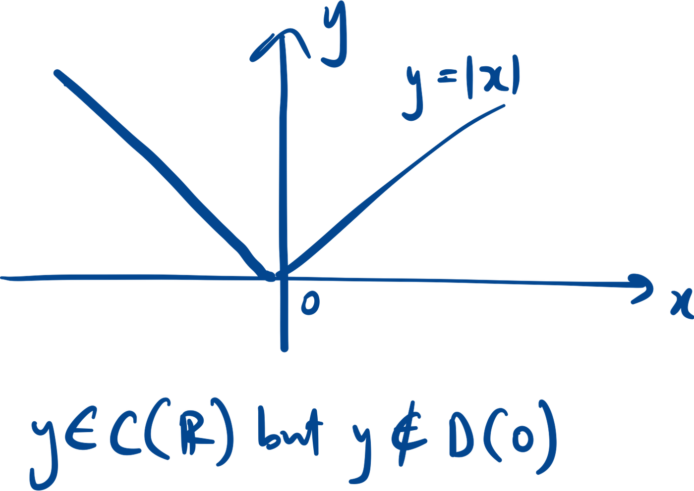
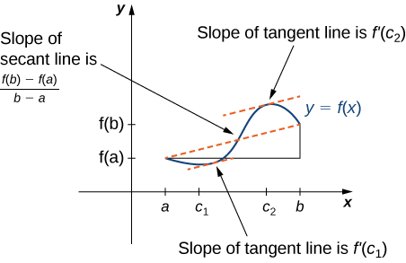
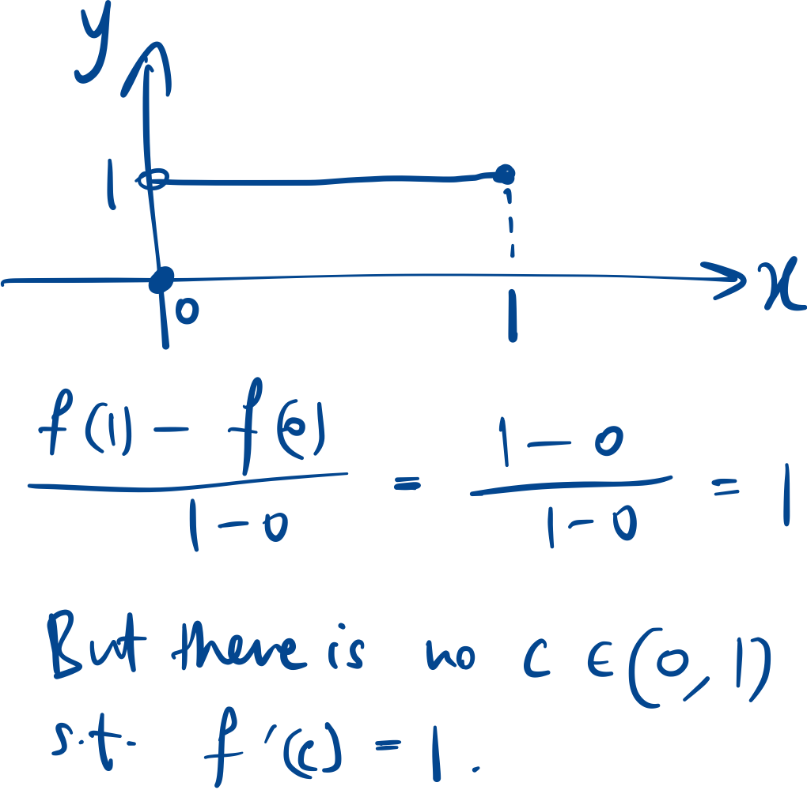
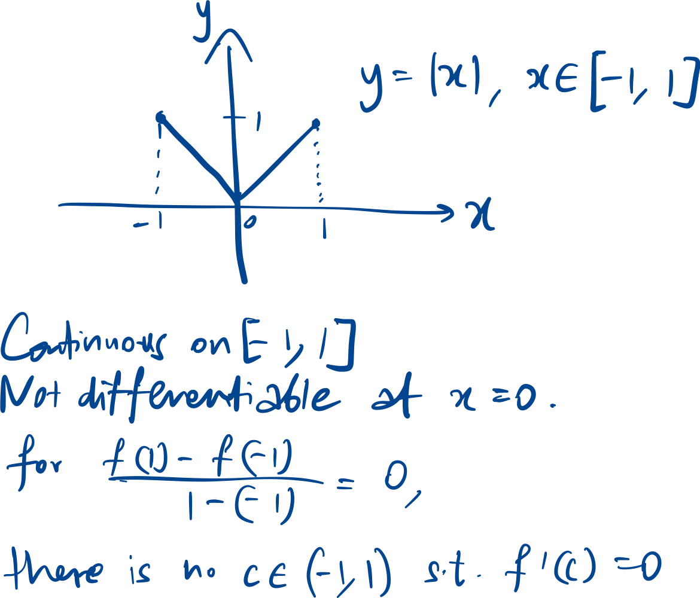
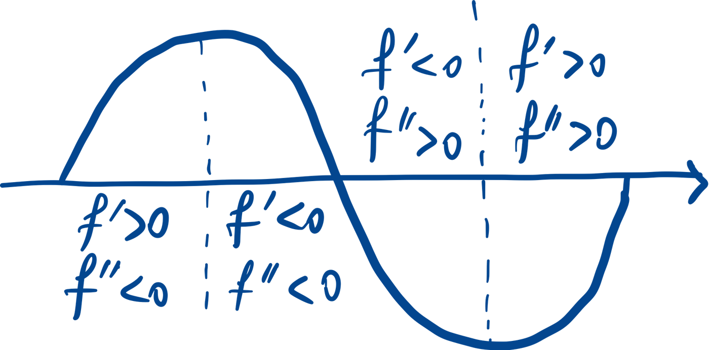

Differentiability
f(x) is differentiable at a point x=a if the derivative at that point
exists, i.e. the below limit exists.
Proving that f is not
differentiable at a
Left-side not equals right-side limit
Caveat
Counter Example:
Differentiability implies
continuity
- Reason: To be differentiable, the graph must be smooth and unbroken
(no sharp or discontinuous points).
- Contrapositive:
- Reason: Not continuous → there exists some discontinuous points /
sharp points at which the derivative does not exist.


Differentiation rules
Assuming
exist,
| Sum rule |
|
| Product rule |
|
| Quotient rule |
|
| Chain rule |
|

Applications:
Linear approximation
Rate of change
given
,
find y(x) , then implicitly differentiate to find
Minima/maxima
*We need to define an open interval, otherwise we can classify any
point, x0, as a local max in a function like f(x) = x, by taking [x0 -
1, x0].
** the reverse implication is not true
** there can be other local minima/maxima where f’(c) ≠ 0.
Finding local minima/maxima:
- f’(c) = 0 (critical point)
- f’(c) d.n.e (critical point)
- End points of a closed interval.
- Isolated points in the domain.
Isolated points are both local maxima and minima. Use the definition
of local minima/maxima to show.
To determine if each point is minima or maxima, use 1st or 2nd
derivative test.
*If the result of 2nd derivative test is 0, we have no conclusion,
use 1st derivative test.
Global minima/maxima will be the smallest/largest of all the local
minima/maxima.
**If finding global minima/maxima on open interval, compare the local
minima/maxima with
or
.
L’hopital rule
Mean value theorem

f must be continuous on [a,b]:

f must be differentiable on (a,b):
(only requires differentiability on open interval, to ensure the
c is interior to the endpoints)

Special case (Rolle’s theorem):
Corollaries:
Similar for strictly increasing, decreasing etc.
Cauchy MVT
This is a general form of MVT, with g(x)=x we get the original
MVT.
Concavity
Can be derived from:
Similar for concave downward.

A point of inflection is where the concavity changes. At an
inflection point,
or
does not exist.
However,
is an inflection point.
Counter-example: Consider
.
but
is not an inflection point.
We need to check the concavity just before and just after the point
where
or d.n.e.
Higher order
derivatives and continuity
2nd derivative test
If
,
we have no conclusion.